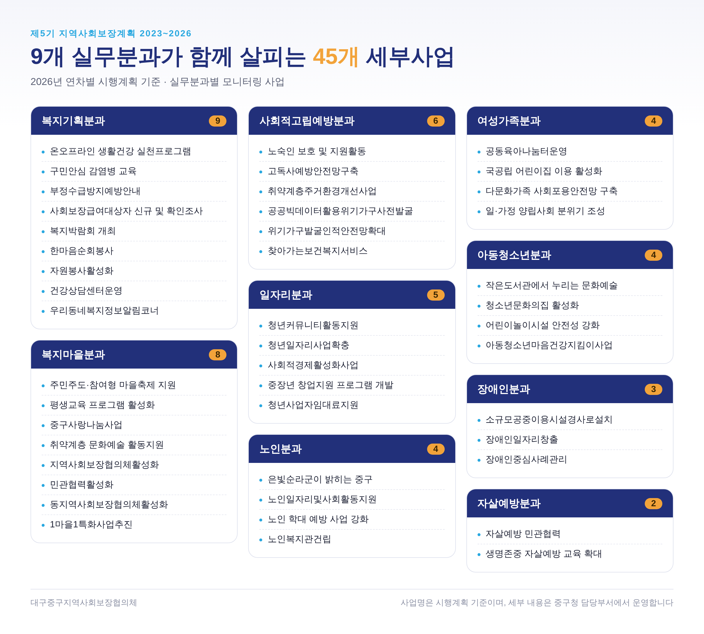
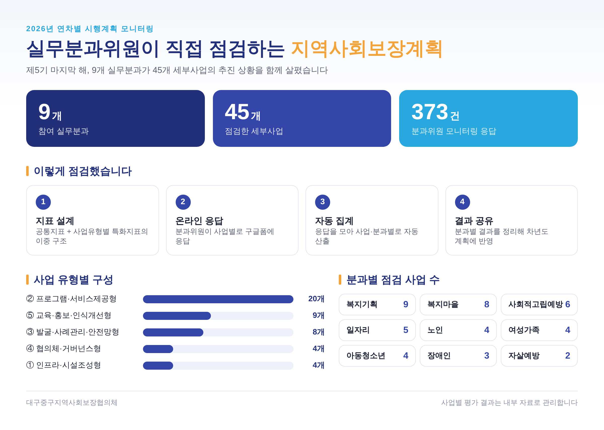

시행 중 · 마지막 해
제5기 중구 지역사회보장계획
2023년부터 2026년까지 4년간 추진하는 중구 복지의 중기 계획입니다. 해마다 시행계획을 세우고, 9개 실무분과가 사업을 모니터링해 결과를 점검합니다.
계획 기간2023 ~ 2026
모니터링9개 분과 · 45개 사업
연도별 진행
20231차년도 시행계획 · 결과
20242차년도 시행계획 · 결과
20253차년도 시행계획 · 결과
20264차년도 시행계획 · 모니터링
세부사업

2026년 시행계획 모니터링

수립 완료 · 2027년 시행 준비
제6기 중구 지역사회보장계획
2027년부터 2030년까지 4년간 추진할 계획을 수립했습니다. 지금은 첫해인 2027년 연차별 시행계획을 세우고 있습니다.
계획 기간2027 ~ 2030
현재 단계2027 시행계획 수립 중
연도별 진행
20271차년도 시행계획 수립 중
20282차년도
20293차년도
20304차년도
수립 과정 완료
- 지역사회보장조사주민 욕구·자원 조사
- 제5기 성과 평가모니터링 결과 반영
- 계획(안) 마련비전·전략·세부사업
- 주민 의견 수렴공청회·의견 접수
- 협의체 심의대표협의체 심의
- 구의회 보고·시 제출대구시 제출
세부사업
제6기 세부사업 목록 준비 중2027년 연차별 시행계획이 확정되면 분과별 세부사업을 이미지로 정리해 올립니다.
2027년 시행계획에 의견을 보태 주세요
사무국 053-661-2288
우리 동네에 필요한 복지, 지금 부족한 서비스를 알려주시면 시행계획에 반영합니다.